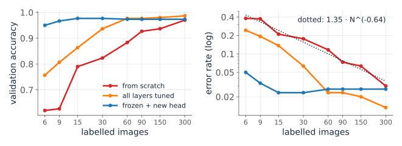
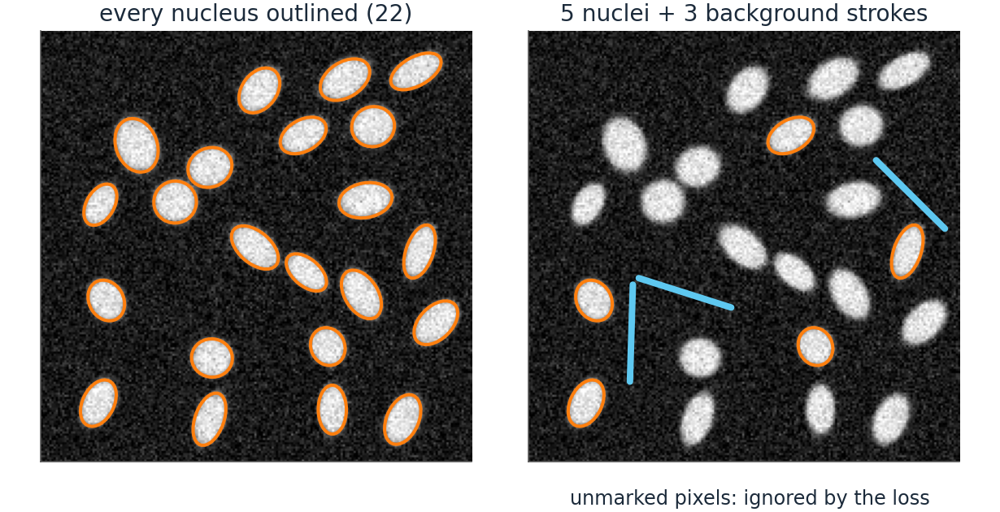
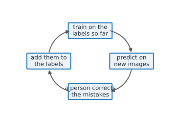
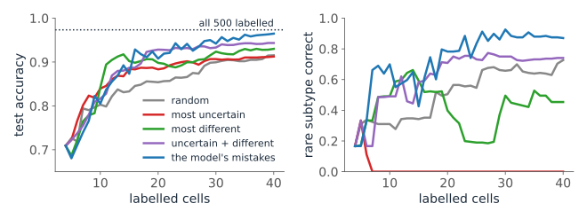

Few labels: annotation and the human in the loop
About this lecture
Annotating is the expensive part: an expert outlining cells for days. This unit is about spending that time well.
- Learning curves: how accuracy grows with the number of labels, and what more labels would buy.
- What to annotate: objects rather than whole images; sparse annotation.
- The human in the loop: let the model predict, correct its mistakes, retrain, repeat.
- Active learning: let the model choose what to label next: the most uncertain, the most different, or both.
Slides titled The math give the formulas and proofs; the ideas are complete without them.
How does accuracy grow with labels?

- A learning curve: accuracy (or error) against the number of labels. Measure it with 10, 20, 40, … of your labels before annotating more.
- On log-log axes the error often falls along a straight line: each doubling of the labels removes the same fraction of the errors.
- It flattens where the model cannot do better: the frozen probe at about 3 % error. More labels do not help there; a better model does.
The math: power-law learning curves
Empirically, over a wide range of N,
\text{error}(N) \approx a\,N^{-b} + c
with c the floor (label noise, a model too weak). On log-log axes, without the floor, a line of slope -b.
- Toy, from scratch: \text{error} \approx 1.35\,N^{-0.64} (dotted line).
- Halving the error needs 2^{1/b} times the labels: 2^{1/0.64} \approx 3 times. Going from 10 % to 1 % error: 10^{1/0.64} \approx 36 times.
- Fit a, b on the labels you have, extrapolate (carefully), and decide whether more annotation or a better model is the cheaper way.
What to annotate
- Networks learn from objects and pixels, not from images: 20 images with 5 outlined nuclei each teach more than 2 images with 50 each (more variety: illumination, density, cell state).
- Sparse annotation: outline a few objects completely and paint a few background strokes; leave everything else unmarked. The loss is computed only on marked pixels.
- Annotate the hard cases: touching nuclei, dim cells, debris. Easy cases are learnt from few examples.
- Never let a sparse label mean “background” where it is unmarked: an unmarked nucleus counted as background teaches the network to miss nuclei.

The math: a loss on marked pixels only
Pixel i has a label y_i and a mask m_i = 1 if marked, 0 if not. The sparse loss is the mean over the marked pixels:
\mathcal L = \frac{\sum_i m_i\,\ell(\hat y_i, y_i)}{\sum_i m_i}
- Unmarked pixels get no gradient: the network is free to predict anything there.
- With class imbalance (few nucleus pixels, many background pixels in the strokes), weight the classes: \ell \to w_{y_i}\,\ell with w_c \propto 1/(\text{marked pixels of class } c).
- The random-forest day’s pixel classifier is trained exactly this way from painted strokes.
The human in the loop
- Train on the labels so far (or start from a pretrained network).
- Predict on new images.
- A person corrects the predictions: delete false objects, fix outlines, add missed cells. Correcting is much faster than drawing from scratch.
- Add the corrected images to the training set; repeat.
- Cellpose’s training on a few of your own images and SAM’s click-and-correct (SAM unit) are this loop.
- Each round the person looks at the model’s mistakes: the labels go where they are needed.

Active learning: let the model choose
![Three panels of the same pool of 500 cells in a 2D feature space (blue class A, orange class B, a dashed circle around a small rare subtype of class B in the top-left corner), with the background coloured by the model's prediction and the 40 labelled cells as large dots. At random: labels spread everywhere, test accuracy 82 %, rare cells 33 %. Most uncertain: labels crowd along the boundary between the two moons, none in the rare cluster, which is predicted as class A: accuracy 91 %, rare cells 0 %. Uncertain + different: labels along the boundary and in far corners including the rare cluster: accuracy 95 %, rare cells 81 %.](fig-pools.png)
- Most uncertain: label the cell whose prediction is closest to 50 : 50. Labels go to the boundary, where they move it most.
- But a whole group the model is confidently wrong about (the rare subtype) is never uncertain: it is never asked about.
- Most different: the cell farthest from everything labelled. Combine both.
The math: measuring uncertainty
For a prediction \mathbf p = (p_1, \dots, p_K):
\text{margin: } 1 - (p_{(1)} - p_{(2)}), \qquad \text{entropy: } H = -\sum_k p_k\log_2 p_k, \qquad \text{least confidence: } 1 - p_{(1)}
(p_{(1)} \ge p_{(2)} the two largest). Two classes: all three rank the cells the same way; p = 0.5: margin 1, entropy 1 bit; p = 0.9: 0.2 and 0.47 bits.
- These measure the model’s own uncertainty, which is only as good as its calibration (the attention unit): far from the labels a model can be confidently wrong.
- Disagreement of several models (an ensemble, or dropout at prediction time) is a better guide: they agree where the data forced them, and disagree elsewhere.
- Diversity: “farthest-first” picks \arg\max_j\min_{i \in \text{labelled}}\|\mathbf x_j - \mathbf x_i\|; in practice in the network’s feature space.
Try it: which cell next?
Learning curves of the rules

- Most uncertain wins early (15 labels: 88.4 % against 83.3 % at random), then stalls: it never finds the rare subtype.
- Uncertain + different: 94.3 % with 40 labels; random needs far more for that.
- A person correcting the model’s mistakes is best (96.5 % with 40 of 500 labels; all 500 give 97.3 %), but needs a person who looks at every prediction.
Active learning as pseudocode
labelled = a few cells of each class (chosen by a person)
repeat until the budget is spent:
train the model on labelled
for every unlabelled cell j:
u[j] = uncertainty of the prediction for j # e.g. 1 − |2p − 1|
d[j] = distance from j to the nearest labelled cell
pick the next cell(s): largest u, or largest d, or alternate
a person labels them; add them to labelled
evaluate on a separate, randomly chosen test set- In practice pick a batch (say 10 images) per round, spread out, because retraining is slow.
- The coding exercise implements both rules and compares the learning curves.
Rules for a labelling campaign
- The test set is chosen at random, never by active learning: actively chosen cells are the hard ones and give a pessimistic, unrepresentative score (and they leak into training).
- Label whole images of the test set, or a random sample of objects, so that rare objects appear in their true proportion.
- Check annotator agreement first: two people on the same images (the agreement unit). A model cannot be expected to beat it, and more labels from one annotator will not fix a disagreement.
- Count the cost per object, not per image: correcting a prediction takes seconds, outlining minutes.

Summary
| Idea | In one line |
|---|---|
| Learning curve | measure accuracy at 10, 20, 40 labels; error ≈ aN^{-b}, flattening at a floor |
| Sparse annotation | a few complete objects + background strokes; the loss ignores unmarked pixels |
| Human in the loop | predict, correct, retrain: the person’s time goes to the mistakes |
| Most uncertain | labels the boundary; fast early, blind to confident mistakes |
| Most different | covers the space; finds rare groups |
| Test set | always random, never chosen by the model |
Next: domain shift: the same cells through another microscope.